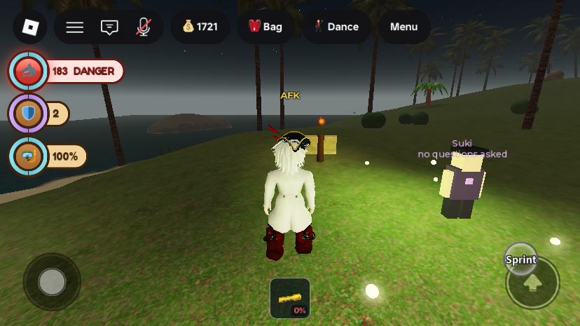
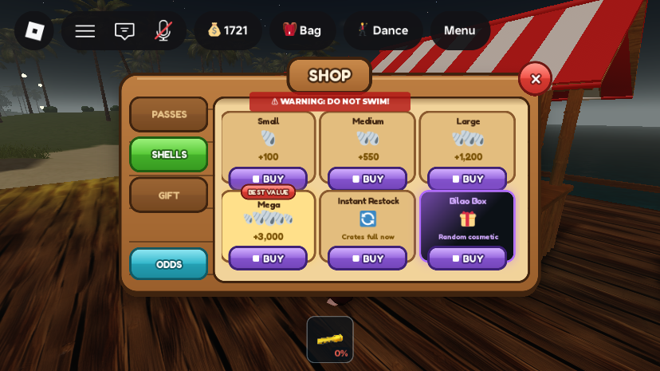
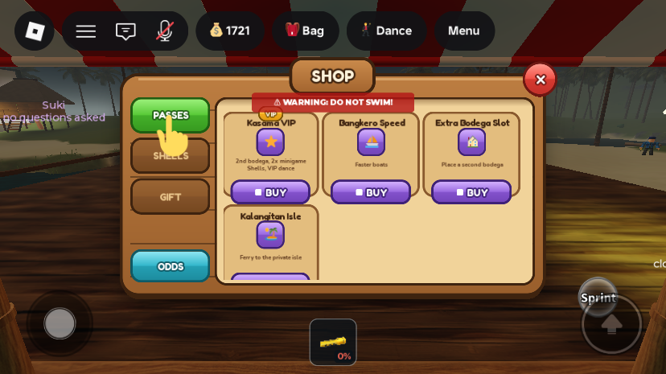
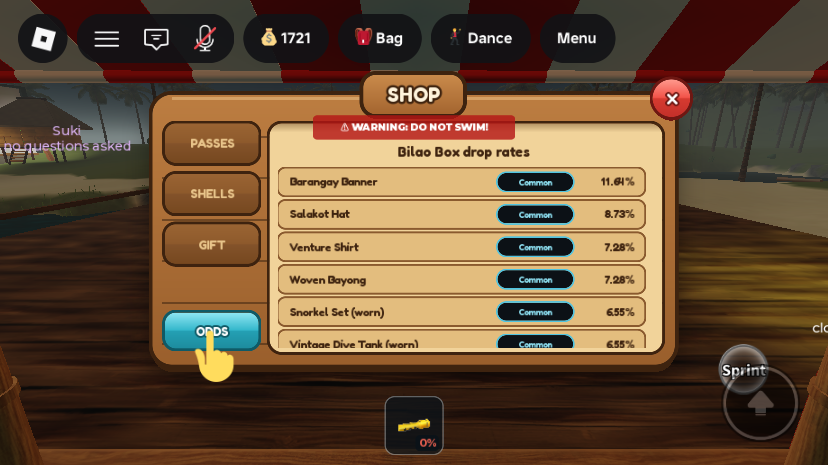
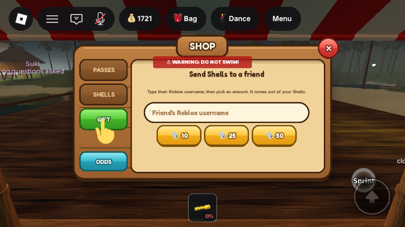
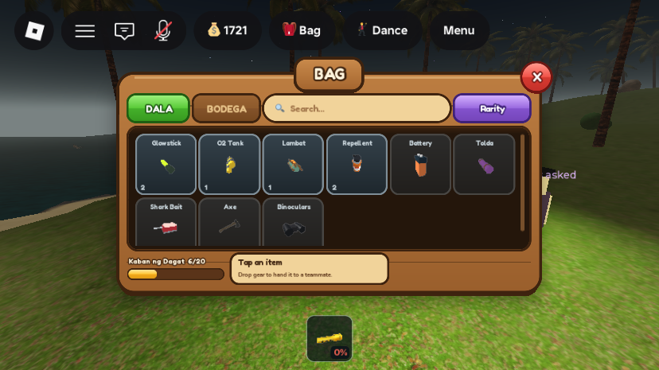
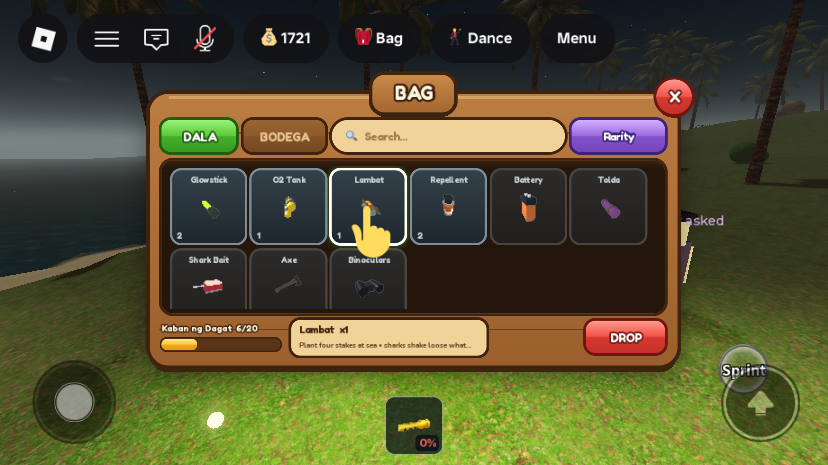
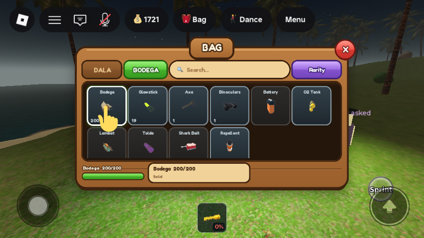
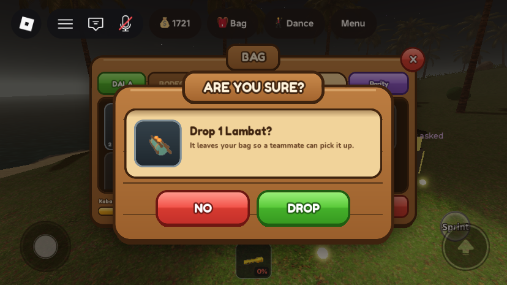
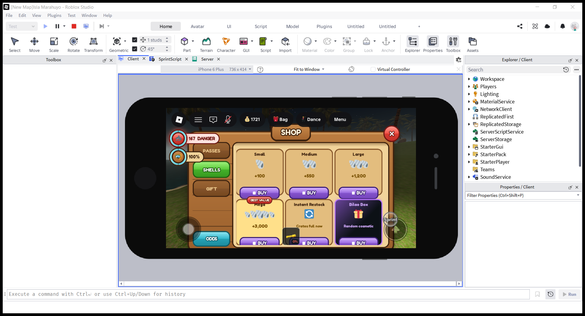

UI redesign: carved wood + neon rarity (Shop, Bag, status column, confirm dialog)
What was asked
A redesign of the game's UI in a "trending Roblox" style, built from reference images the owner supplied: glossy bevelled buttons, thick outlines, textured panels, and neon rarity-framed inventory tiles. The owner reviewed HTML mockups on a canvas and chose between options. The approved designs are:
- Style: "Wood + neon rarity". Carved-wood panels and buttons for every menu. Finds and rare items use dark tiles with a neon ring, coloured by value tier.
- Island Shop and Bag, as mocked up.
- Left status column as ring badges (option B of three).
- Popup as a centre "ARE YOU SURE?" dialog (option B of three).
Constraints the owner set during review: the game is played in landscape on phones (736×414 in Studio's iPhone 6 Plus emulation). The top-left belongs to Roblox's own top bar and the TopbarPlus icons, and the current hotbar and top-bar icons stay as they are. Only layouts Roblox can actually build are allowed. Then: "finalize this, then apply to roblox game isla marahuyo".
1. UIKit: one module for the whole look
New ReplicatedStorage.UIKit (client-side ModuleScript) builds every approved piece from native instances only: UICorner, UIStroke, UIGradient and the new UIShadow. No image assets are uploaded. Both fonts are built in: Fredoka (Enum.Font.FredokaOne) for titles and buttons, Nunito ExtraBold for body text.
K.panel: a wood panel. A vertical brown gradient, a 4px dark-walnut stroke, plank seams every 46px and a light top edge, a hard 8pxUIShadowunderneath (blur 0) plus a soft wide one.K.sign: the raised title sign straddling a panel's top edge, with an outlined Fredoka title (UIStrokein Contextual mode).K.button(parent, palette, text): a glossy button. Its 4-stop gradient has a hard step at 48–52%, which gives the shine. It has a coloured edge stroke, an outlined label, and a hard shadow the face sinks onto when pressed. Palettes:green(buy/confirm),red(close/decline),gold(Shells),violet(Robux),teal(info),wood(inactive tab),locked(flat, no shine).K.inset(cream) andK.well(dark): recessed content areas.K.tile(parent, tier): a neon rarity tile (a dark card, a 2.5px ring in the tier colour, aUIShadowglow, a diagonal colour wash), or a steel "gear" tile. It can show a selected state.K.ringBadge: a ring that fills clockwise, drawn from two clipped half-circles whose stroke gradients are rotated. No ring image is needed.K.gem: a faceted gem in a find's ownItemConfigcolour, because finds have no 3D model.K.fitBand(frame): centres a panel in the band between the Roblox top bar (GuiService:GetGuiInset()) and the hotbar (80px reserved), and scales it down, never up, until the panel, its sign and its shadow fit. It re-runs when the viewport or the top-bar inset changes.K.confirm{heading, message, yes, no, icon, onYes, onNo}: the shared centre dialog (section 5).- Rarity tiers:
K.tierForValue(sell)maps what the Palengke pays for a find: ≥200 Legendary (gold), ≥60 Rare (violet), ≥20 Uncommon (green), otherwise Common (cyan). That gives Kabibe = Common, Bahura = Uncommon, Yungib = Rare, and Kailaliman, Kristal, Yaman and Perlas = Legendary.
2. Status column: ring badges on the left

NearWater was set for the shot).StarterPlayer.StarterPlayerScripts.StatusHudwas rewritten. The data logic is unchanged: the same remotes (SharkAlertUpdated,BreathUpdated,DiveFeedback,InventoryUpdated), the same attributes, and the same rows that appear only when they apply.- It moved from the right edge to the left, placed under the top bar (inset + 8px). A
UIScaleshrinks it if the rows would reach 72% of the screen height, where the thumbstick corner starts. - Air and torch are percentages, so their rings fill. Air turns gold at ≤55% and red (danger) at ≤25%; torch turns red at ≤20%. Sharks, repellent, sack, jail minutes and jobs are counts and show a full ring. Repellent turns gold at ≤1 can. The sack tab shows "pieces • Palengke value". The back-to-cell button is now a small wood button.
- The column hides while any menu panel is open (it listens to
PanelUtil.Changed; the dialog is excluded). Otherwise it sat on top of the Shop's tabs on a phone. - The top-bar inset reads 0 when the script starts, so the column re-places itself on
GuiService.TopbarInsetchanges and again after 1 s and 3 s.
3. Island Shop




StarterGui.ShopUI.ShopControllerwas rewritten. It now builds the panel at runtime with UIKit (580×300 design size, fitted withK.fitBand), so the old staticShopUI.PanelandShopUI.OddsPanelwere retired (see All changes).ShopUI.IgnoreGuiInsetis set to true at runtime.- The layout follows the approved mockup: wood tabs PASSES / SHELLS / GIFT down the left (the active one green), ODDS (teal) at the foot, and the content in a cream inset. Passes and Shells are a 3-column tile grid with one BUY each; the grid scrolls if it has to.
- Unchanged behaviour: same remotes and keys (
RequestGamePassPurchase/RequestProductPurchasewithKasamaVIP,ShellsSmall…,RequestGift(username, amount),GiftFeedback), same odds source (ReplicatedStorage.BilaoBoxOdds), same open path (PalengkeMarketDeck.ShopPrompt→PanelUtil"islandshop", closing past 22 studs). - BUY buttons are violet with the Robux diamond and no price number. Real prices are set on the Creator Dashboard; the prices in
MonetizationConfigare only suggestions. Roblox's own prompt shows the real price. - An owned pass (player attribute of the same key, e.g.
KasamaVIP == true) shows a flat OWNED button and no longer fires a purchase. - Pass names follow
MonetizationConfig. Tile 3 now reads "Extra Bodega Slot", the pass's current name; the old shop still said "Extra Cabin Plot". The ribbon on Kasama VIP says "VIP", not "Most popular", because there is no data behind a popularity claim. MobileUIControllerno longer scales ShopUI; the shop fits itself.
4. Bag (moved to its own script)

ItemIcon 3D views. The status column has stepped aside.

- New
StarterPlayer.StarterPlayerScripts.BagHuddraws the dive bag in the approved style (620×320 design size, fitted withK.fitBand): DALA / BODEGA tabs, a search box (filters by name), a sort button (Rarity: finds by value, then carried gear, then the rest; A-Z by name), a dark well with a 6-column tile grid, and one footer. The footer holds capacity or bodega health on the left, the selected item's line in the middle, and the actions on the right. - Interaction change: every card used to carry its own USE/DROP or PACK/STOW buttons. Now you tap a tile and act in the footer, as in the mockup. The rules for which buttons show are the old ones: USE only for usable non-hotbar gear; DROP never for bound items (axe, binoculars); PACK/STOW only at your bodega; REPAIR when damaged and at the bodega; UPGRADE when not already stone.
- New: finds appear in the bag. Finds in the sack (Kabibe…Perlas, from
state.finds) show as neon rarity tiles with a gem icon when you have any. Selecting one shows "Sells for N each at the Palengke". Finds are still not bag items and have no buttons; selling stays at the Palengke. - Same wiring as before:
PanelUtilname "bag" (the top-bar Menu still opens it), key N, theBodegaOpenremote opens the BODEGA tab pinned to the bodega, it opens only withBodegaUp, and the same remotes (RequestItemUse,RequestItemDrop,RequestTransfer,RequestBodega). Without a bodega, a cream note reads "Place your bodega first -- Bag menu, then Place bodega." GearHudlost the bag: its panel, cards, tabs, bodega list, refresh,PanelUtilregistration, theBodegaOpenhandler and the N-key binding. It keeps the Palengke, the shared toast, the dive tip and the bodega Open-prompt filter. Opening the Palengke now closes the bag throughPanelUtil.Close("bag").
5. Centre confirm dialog

UIKit.confirmbuildsPlayerGui.KitDialog(DisplayOrder 60) on first use: a dim backdrop (tapping it answers No), a wood panel with the "ARE YOU SURE?" sign, a cream inset with an optional icon, a heading and a message, and red NO / green YES buttons (the YES label is per call, e.g. DROP or SELL). It registers withPanelUtilas "kitdialog", so the cursor is freed in first person, and it fits itself withK.fitBand.- The game had no confirmations anywhere. It is now used in two places, both actions that cannot be undone:
- Bag DROP: "Drop 1 <item>? It leaves your bag so a teammate can pick it up." (the game's own wording for dropping).
- Palengke SELL (in
GearHud): "Sell N finds? You get X Peso for the lot."
All changes
| Path | What | |
|---|---|---|
| new | ReplicatedStorage.UIKit | the shared style module (section 1) |
| new | StarterPlayer.StarterPlayerScripts.BagHud | the dive bag (section 4) |
| rewritten | StarterGui.ShopUI.ShopController | runtime-built Island Shop (section 3) |
| rewritten | StarterPlayer.StarterPlayerScripts.StatusHud | left ring-badge column (section 2) |
| edited | StarterPlayer.StarterPlayerScripts.GearHud | bag removed (786 → 568 lines); SELL asks for confirmation; requires UIKit |
| edited | StarterPlayer.StarterPlayerScripts.MobileUIController | ShopUI removed from TARGETS |
| edited | StarterPlayer.StarterPlayerScripts.PhotoModeController | OTHER_GUIS also hides BagHud and KitDialog |
| retired | StarterGui.ShopUI.Panel → ServerStorage._Retired.StarterGui_ShopUI__Panel | old static shop panel |
| retired | StarterGui.ShopUI.OddsPanel → ServerStorage._Retired.StarterGui_ShopUI__OddsPanel | old static odds popup |
| backup | ServerStorage._Retired.StarterPlayer_StarterPlayerScripts__StatusHud_preRedesign, …__GearHud_preRedesign, StarterGui_ShopUI__ShopController_preRedesign | disabled copies of the three scripts as they were before this change, for rollback |
Runtime-only GUIs (created by the scripts, not saved in the place): PlayerGui.BagHud, PlayerGui.KitDialog, PlayerGui.ShopUI.Panel (the new one), PlayerGui.StatusHud. No new remotes, attributes or saved data. New attributes read: each pass key on the player (for OWNED). PanelUtil gained the entry "kitdialog".
Tunables: UIKit.fitBand reserves 80px at the bottom for the hotbar and 26px above a panel for its sign. The Shop is 580×300 with 96px tiles; the Bag is 620×320 with 86px tiles in 6 columns; ring badges are 48px (touch) or 46px. The status column scales below 72% of screen height. Tier thresholds are 20 / 60 / 200 Peso.
How it was tested
Three playtests on the iPhone 6 Plus emulation (736×414), each ended by kicking the player from the Server datamodel. Every new or rewritten script passed a loadstring compile check, and the startup log showed no errors from them.
- Status column: shark danger (red with glow), repellent 2 and air 100% were seen.
Positionwas confirmed at (12, 66) under the 58px top bar (AbsolutePositionreads 8 because Roblox reports it below the inset). The column hid when the Bag and the Shop were opened throughPanelUtil. - Shop: opened through the real
ShopPrompt(E held beside the stall). The status column hid, andK.fitBandscaled the panel to 0.80 on this screen. All four tabs worked. The first pass overflowed the bottom of the screen (image 10); after the size change, all six Shells tiles and their BUY buttons fit. - Bag: test gear was added through
ServerStorage.GiveToBag(lambat, glowstick ×2, oxygen, repellent ×2) and the bag opened with the N key. Carried and uncarried tiles, selecting Lambat, DROP → dialog → DROP all worked: the Lambat count went to 0 and the footer read "None carried". The BODEGA tab showed bodega health 200/200 "Solid" and stored gear. - Dialog: seen and confirmed through the Bag's DROP (image 08).

Not verified / known gaps
- Finds tiles and the Palengke SELL dialog were not seen live.
GiveToBagrefuses loot keys, and no finds were collected in testing. The code path is the sameK.confirmas DROP, but neither the neon find tiles in the Bag nor the SELL confirmation have been on screen yet. - A partly filled ring (e.g. air at 47%) was not photographed; the column was hidden by the open bag when the test value arrived. Only full rings were seen.
- Not exercised: USE, PACK, STOW, REPAIR and UPGRADE from the new footer; the search box and the A-Z sort; the OWNED state on a pass; the jail, jobs and back-to-cell badges; the torch badge; the "place your bodega first" note.
- For the layout re-check after the final tile trim, the Shop was opened by setting
Panel.Visible(the E press hit a market stall's prompt that time). The real prompt path was verified in the run before. - The old SharkAlertGui "WARNING: DO NOT SWIM!" banner (not part of this change) shows under the top bar and overlaps the top edge of the Shop when the stall's shark count is high. Hiding it while a panel is open would be a small follow-up; it was left alone because it is safety information.
- The shark badge's emoji and the item emoji are drawn by Roblox's emoji font; they look slightly different per device.
- The Bangkero Speed pass still has
id = 0inMonetizationConfig. Its BUY button sends the request as before, but no purchase can happen until the pass is created. - Only checked at 736×414.
K.fitBandhandles other sizes by scaling, but that is untested on a real phone or on desktop.
Test values to revert: nothing in the place. The test account MERS_Cov2 received real gear through GiveToBag (glowstick +2, oxygen +1, repellent +2; the Lambat given was dropped in the test world). This is saved in its profile and has not been removed. BodegaUp and NearWater were set on the client only for screenshots, so they were not saved.